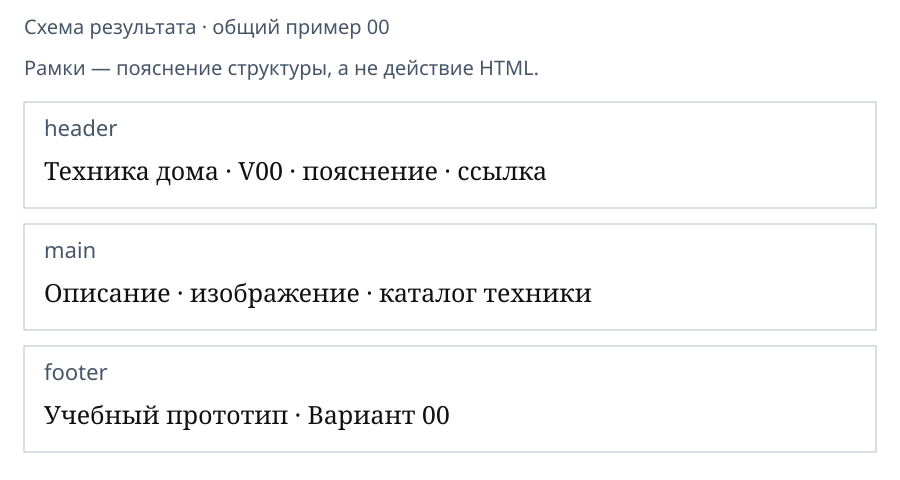
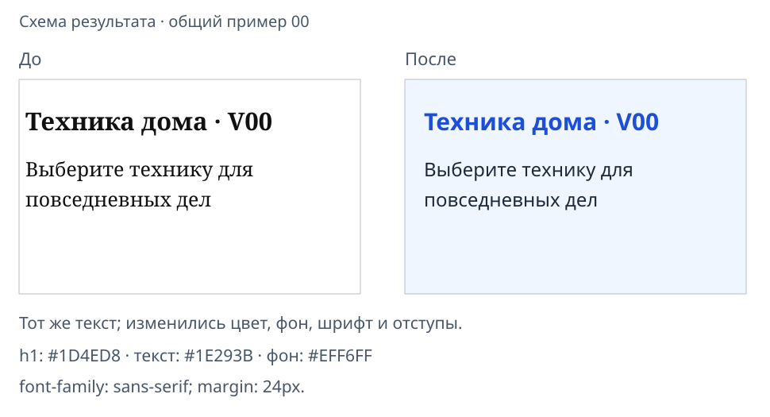

Разбор HTML-страницы и первые стили CSS
От готовой страницы к оформлению
Третья пара веб-блока — лекция с короткими действиями в своём проекте. Вместе разберём результаты двух практик и подключим CSS.
Сегодня: понятные части страницы, цвет текста, фон и отступ от края. Сложные карточки, колонки и форму пока не создаём.
Примеры и схемы используют пример «Техника дома» этой пары. Продолжайте свой VariantNN-web: тексты, подпись номера и цвета берите из личного варианта.
Откройте свой проект после второй пары.
Демонстрационный пример
Открыть пример
Это постоянный пример преподавателя, который студентам не назначается. Задание пары 12: в прежнем Variant00-web/index.html объединить содержание по смыслу и подключить один style.css. Тексты и картинку первой страницы сохраняем; миникаталог и ссылку из пары 11 не удаляем.
Полные данные исходной страницы
| Данные | Значение и место в HTML |
|---|---|
| Название приложения | Техника дома · V00 — title и h1 |
| Короткое пояснение | Выберите технику для повседневных дел — первый p |
| Заголовок главной | Бытовая техника для дома — h2 |
| Описание | Три прибора для кухни и дома. Сравните характеристики и выберите нужный товар. — второй p |
| Изображение | images/fridge.svg, alt="Холодильник", ширина 240 |
Готовая отдельная иллюстрация fridge.svg для копирования в images:
Сохранение изображения: скачанный 010-00-fridge.svg назовите fridge.svg и сохраните в своей папке images, как указано в задании.

Задание этой пары
| Часть | Что входит в пример |
|---|---|
header |
Название «Техника дома · V00», пояснение «Выберите технику для повседневных дел», ссылка «Посмотреть технику» с href="#catalog" |
main |
Заголовок «Бытовая техника для дома», описание «Три прибора для кухни и дома. Сравните характеристики и выберите нужный товар.» и изображение images/fridge.svg; «Каталог техники» с id="catalog" и список «Холодильник», «Стиральная машина» |
footer |
Абзац «Учебный прототип · Вариант 00» |
Подключение в head |
Строка подключения общего CSS приведена ниже |
Итоговый цвет h1 |
#1D4ED8 после опыта с navy |
Правило body |
Шрифт sans-serif, текст #1E293B, фон #EFF6FF, внешний отступ 24px |
Внутри head добавьте строку:
<link rel="stylesheet" href="style.css">
Проверьте две независимые вещи: HTML-группы сохраняют содержание и переход к #catalog, а CSS меняет его вид. Одна правка текста в HTML и одна правка цвета в CSS должны дать разные наблюдаемые результаты. Схемы и действия находятся в объяснении пары по ссылке в конце листа.
Узнайте элементы своей работы
| Что видно | Чем создано |
|---|---|
| Название во вкладке | title внутри head |
| Главный заголовок | h1 внутри body |
| Текстовый абзац | p |
| Заголовок каталога | h2 |
| Маркеры списка | ul и вложенные li |
| Переход по надписи | a с href |
| Картинка | img с src |
Найдите каждый элемент в своём коде. head — сведения о документе, body — его видимое содержание.
Исправим повторяющиеся ошибки
Покажите преподавателю один непонятный результат. Проверьте соответствующую строку:
- изображение — путь
srcи наличие файла; - ссылка — совпадение
href="#catalog"иid="catalog"; - чужое название — тексты
titleиh1; - неверный порядок — расположение элементов внутри
body.
После исправления сохраните и обновите. Браузер иногда показывает даже ошибочный HTML, поэтому проверьте и закрывающие теги.
Разделим страницу по смыслу

| Элемент | Что поместим внутрь |
|---|---|
header |
Название, короткое пояснение и ссылку |
main |
Описание, изображение и каталог |
footer |
Подпись учебного прототипа |
Рамки на схеме — пояснение. Эти теги сами не добавляют цветную рамку или фон. Видимая шапка header находится в body, а служебный head — вне него.
Оберните уже написанные элементы
Внутри своего body:
- Перед
h1добавьте<header>, после абзаца со ссылкой —</header>. - Перед заголовком главной добавьте
<main>, после</ul>—</main>. - Перед
</body>добавьте подпись своего варианта (ниже показан общий пример 00):
<footer>
<p>Учебный прототип · Вариант 00</p>
</footer>
Существующие тексты, изображение и список остаются внутри своих групп. Каркас и head сохраняются. Обновите страницу и проверьте ссылку: её цель catalog должна остаться.
Вот что сделает CSS

HTML задаёт содержание и назначение элементов. CSS описывает внешний вид. На схеме те же слова; изменились шрифт, цвет, фон и отступы.
Это посильный результат третьей пары. Сложную компоновку будем изучать позже.
Создайте и подключите style.css
Создайте файл style.css рядом с index.html. В Блокноте при сохранении: «Все файлы», UTF-8; проверьте, что нет расширения .txt.
VariantNN-web/
index.html
style.css
images/
В HTML перед существующей строкой </head> добавьте:
<link rel="stylesheet" href="style.css">
rel="stylesheet" обозначает таблицу стилей, href — путь к ней. У link нет закрывающего тега. Пока файл CSS пуст, внешне ничего не изменится.
Измените цвет главного заголовка
В style.css запишите:
h1 {
color: navy;
}
| Часть | Значение |
|---|---|
h1 |
Селектор: какие элементы выбираем |
color |
Свойство цвета текста |
navy |
Значение цвета |
{ }, :, ; |
Границы правила и разделители |
Проверка: сохраните оба файла, обновите страницу. Заголовок стал тёмно-синим. Текст остался прежним. Затем замените navy на #1D4ED8: это итоговый синий цвет заголовка общего примера 00, показанный на схеме.
Добавьте фон, шрифт и отступы
Ниже правила h1 в том же CSS добавьте:
body {
font-family: sans-serif;
color: #1E293B;
background-color: #EFF6FF;
margin: 24px;
}
Это цвета общего примера 00. После проверки замените color и background-color значениями «Основной текст» и «Фон» из данных своего проекта.
font-family— семейство шрифта;sans-serif— без засечек.color— основной цвет текста.background-color— фон.margin— внешний отступ от краёв;px— единица длины CSS.
Сохраните и обновите. Результат похож на правую часть схемы, с цветами вашего варианта. Цвет заголовка задаётся отдельным правилом h1: для своей работы используйте «Основной цвет действий» из данных своего проекта и проверьте читаемость на фоне.
Проверьте подключение
Если оформление не появилось:
- Оба файла сохранены; в браузере открыта нужная папка проекта.
style.cssв папке и вhrefнаписаны одинаково.linkнаходится внутриhead.- В CSS есть фигурные скобки и двоеточия. Теги HTML в CSS-файле не нужны.
Измените одну надпись в HTML и одно значение цвета в CSS. Объясните разницу результатов.
Итог дня
Своя страница содержит текст, готовую картинку, список и ссылку. После лекции — смысловые группы и простое оформление.
Сохраните всю папку проекта. Сложные карточки, боковые панели, формы и действия кнопок будем осваивать по частям.